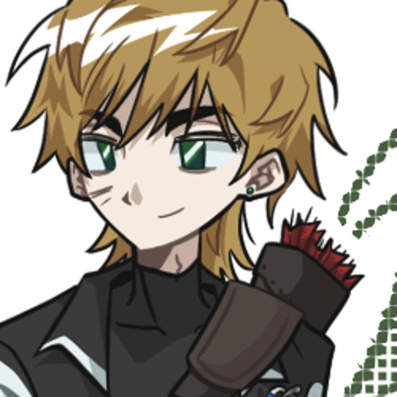

01
긍정적인
역경 앞에서도 고개를 숙이지 않는다. 장차 훌륭한 대원이 될 자에게 두려움이란 없다고 믿는다.
[ 시야 경고 ] · visual & motion
이 페이지에는 만화경처럼 쪼개지고 회전하는 화면, 흔들림, 그림이 거울 조각처럼 갈라지는 효과(특수 능력 섹션)가 들어 있습니다. 빛과 움직임에 민감하다면 ‘효과 줄여서 보기’를 고르세요.
> 크로스도 복잡한 풍경을 보면 어지러워합니다.
(Faction) — Grand Harmony Directorate
Sapientia
사피엔티아 · 대대로 이어 온 진영

Kross
London
표기 주의. 영문 표기는 Cross가 아니라 Kross가 맞다. 성 L의 풀네임은 London(런던)이다. (......)
| 1.1 | Name | 크로스 엘 / Kross L. |
|---|---|---|
| 1.2 | Sex | 남성 |
| 1.3 | Age | 29세 |
| 1.4 | Height / Weight | 185cm / 표준 +2 |
| 1.5 | Faction | 사피엔티아 |
| 1.6 | Attribute | 사격 · 정확성 지원 +10 |
| 1.7 | Talent | 만화경 (특수) |
| 1.8 | Speech | 예스러운 말투, 2인칭은 ‘그대’ |
긍정적인/호쾌한/신중한/호의적인
역경 앞에서도 고개를 숙이지 않는다. 장차 훌륭한 대원이 될 자에게 두려움이란 없다고 믿는다.
“정정당당하게 겨루세!” 숨김 없이 크게 웃고, 겨룰 때는 정면으로 겨룬다.
시야 가득 쏟아지는 정보를 한 번 더 정리한 뒤 시위를 놓는다. 서두르지 않는 궁수.
타인을 돕고 좋은 영향을 끼치는 일을 좋아한다. 동료에게는 먼저 손을 내민다.
L
4.1 — Like
H
4.2 — Hate
S
4.3 — Scare
없음.
“장차 훌륭한 대원으로 성장할 자에게 두려움이란 없도다!”
5.0 — HP
체력
205
기본 200추가 5
// 총합 320 = 추가 체력 5 + 45 + 35 + 85 + 85 + 65 · 정확성 빗금 = 사격 속성 지원 +10
6.A — 공격 기술
화살을 적에게 두 번 적중시킨다! 이보다 간단한 설명이 어디 있겠는가. 화살에 맞은 적은 아플 것이다. 발현 능력 덕분에 실패하는 일이 거의 없다.
약해진 적이 보이면 흩어져 있던 시야를 한 데 모아 특정 적군에게 집중, 급소를 노려 활을 쏜다.
근접 공격이 필요한 경우나 최후의 수단이 필요한 상황이 닥친다면 활 양 옆에 달린 칼날로 적을 공격한다.
6.D — 방어 기술
발현 능력을 통해 적의 움직임을 간파, 잽싸게 회피한 뒤 활을 통해서든 활에 달린 칼날을 통해서든 공격한다.
다중상
적 하나의 눈에 크로스의 시야를 덮어씌워 거울 미로에 가둔다. 혼란에 빠진 적은 더 아프게 맞고, 그 적의 공격은 자주 엉뚱한 곳으로 향한다.
지정 적군에게 캐릭터 본인의 시야를 투영시켜 적군의 시야를 여러 시점으로 분열시킨다. 지정 적군의 시야는 한순간에 서로 다른 각도에서 비친 수많은 상이 겹치고 뒤얽힌 풍경을 인식하게 된다. (마치 거울 미로에 갇힌 것처럼) 실제 사물의 위치와 방향을 분간하기 어려워지며, 거리감과 방향 감각이 흐트러져 다음 캐릭터의 턴이 돌아올 때까지 ‘혼란’ 상태에 빠진다. 혼란 상태의 적군에게 가해지는 피해량은 1.2배가 되며 혼란 상태의 적군의 공격은 65%의 확률로 같은 적군 혹은 본인에게로 향한다. (자해 판정 시의 피해량은 혼란 상태의 피해량이 아닌, 원래의 피해량과 동일하다.)
A. 적군 1이 보는 화면
다중상은 크로스의 시야를 적 한 명에게 덮어씌운다. 시전하면 적군 1의 화면이 크로스의 만화경 시야로 바뀐다.
평소: 적군 1은 자기 눈으로 앞에 선 크로스를 본다.
B. 혼란한 적의 공격은 어디로?
버튼을 누르면 혼란한 적이 갈팡질팡하다가 공격한다.
누를수록 빗나감(같은 적군 + 본인)이 65% 근처로 모인다. 둘의 비율은 신청서에 없어 반반으로 정했다.
아직 공격하지 않았다.
Kaleidoscope
만화경
한 장의 풍경이 아니라 여러 각도의 시점이 맞물린 시야. 사각지대를 보고 한 대상에 집중할 수 있지만, 정보가 한꺼번에 몰리면 어지러워진다.
캐릭터 본인의 시야는 하나의 풍경이 아닌 수많은 다각형의 시점이 맞물린 만화경과 같다. 정면을 바라보더라도 시야 주변부에는 서로 다른 각도에서 비친 풍경이 펼쳐져 보이며 일반인의 시야각으로는 포착하기 어려운 방향의 움직임까지 인식할 수 있다. 각 시점은 하나의 풍경을 서로 다른 방향에서 비추듯 작용하며 캐릭터는 이 파편화된 시각 정보를 무의식적으로 통합해 주변의 공간과 사물의 위치를 파악한다. 사각지대 내 상황 파악, 특정 대상 집중 등에 용이하다. 다만 모든 시점이 동일한 선명도를 지니는 것은 아니다. 또한 여러 시점의 정보가 한꺼번에 유입되면 거리감 혹은 방향 감각이 혼란스러워질 수 있다.
복잡한 무늬나 풍경을 보면 어지러움을 호소하고, 싫어하는 것에 ‘복잡한 것이 시야에 들어오는 것’이 있다.
9.1
가리고 다녀서 그렇지 흉터가 많은 편이다. 특히 팔과 손에 밀집돼 있으며 손에는 굳은살이 박혀 있다.
9.2
예스러운 말투를 어느 때에나 사용한다. 2인칭은 주로 ‘그대’.
> 문장을 누르면 크로스 말투로 바뀐다 (예시)
9.3
발현 능력 덕분에 이점이야 많겠지만, 여러 시점에서 유입되는 정보가 많거나, 복잡한 무늬나 풍경 등을 보았을 경우 어지러움을 호소하기도 한다.
9.4
가족 구성원 대대로 Grand Harmony Directorate의 대원들이었다. 물론 크로스 또한 그 대를 이으려 한다.
10.1
활과 화살
bow & arrows
양 옆에 칼날이 달린 활. 붉은 깃 화살은 등의 화살통에.
10.2
스톱워치
stopwatch
늘 지니고 다니는 작은 스톱워치.
10.3
수선 도구
repair kit
활과 장비를 손보는 도구.
10.4
사탕 통
candy tin
작은 사탕 여러 개가 든 통.
11.1 — 가족관 · @해류
Kris L.
크리스 엘
11.2 — Relation log
“......기어이 이곳에서 마주하게 되는군.”
크리스와 크로스는 쌍둥이 남매이다. 다만 어째서인지 사이가 제법 서먹한 듯 보인다. 늘 사람 좋게 웃고 다니는 크로스일지라도 크리스 앞에서는 웃음이 잦아든 채 어딘가 떨떠름한, 약간은 불안한 기색을 보이기도 한다. 그럼에도 소중한 가족임은 변치 않는다. 잘 챙겨주는 편.
11.3 — Open slot · 추가 선관
갠밴 와주세요~~
SL≥CL
(Oath) — 입단 각오
[ 역경 따위에 굴하지 않고 반드시 책무를 완수하겠도다. ]
오너 한마디 — 주력 캐릭터가 아니라서 캐입이 다소 어색할 수도 있지만 잘 부탁드립니다ㅎㅎ